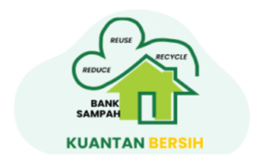
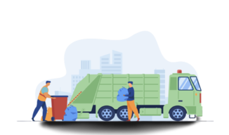

<ion-content fullscreen class="ion-padding" scroll-y="false">
  <swiper [pagination]="true" class="mySwiper">
    <ng-template swiperSlide>
      <div class="slide">
        
        <h2>SELAMAT DATANG</h2>
        <p>
          Permudah transaksi anda di Bank Sampah Kuantan Bersih dengan M-BSKB
        </p>
      </div>
    </ng-template>

    <ng-template swiperSlide>
      <div class="slide">
        
        <h2>Kami Bertujuan</h2>
        <p>
          “Mereduksi (Mengurangi) Timbulan Sampah di tingkat masyarakat. dan
          mewujudkan Kota Tanjungpinang yang bersih, indah dan lestari.”
        </p>
      </div>
    </ng-template>

    <ng-template swiperSlide>
      <div class="slide bg">
        
        <h2>Permudah Setor Sampah</h2>
        <p>
          Gak perlu repot mikirin sampah yang susah di bawa, karena kami punya
          layanan JEMPUT SAMPAH.
        </p>
        <ion-button fill="clear" click="" routerLink="/login">Mulai</ion-button>
      </div>
    </ng-template>
  </swiper>
</ion-content>
